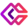

D
Darwin StudioГенерация и редактирование изображений
«Darwin Studio» представлен в разделе «Генерация и редактирование изображений». При выборе проверьте нужную операцию и условия работы с результатом.
Раздел «Генерация и редактирование изображений»: варианты ИИ для этой задачи, описания возможностей и переходы к обзорам.
Подготовьте вариант собственного предметного снимка с другим окружением. Опишите поверхность и свет, а свойства изделия оставьте неизменными; сравните края, пропорции и контактную тень, чтобы оформление не добавляло новых элементов конструкции и не меняло цвет товара.
Помести мою настольную лампу на светлый деревянный стол у спокойной стены. Сохрани форму основания, выключатель и цвет корпуса; согласуй тень с мягким светом слева, новых деталей не добавляй.

«Darwin Studio» представлен в разделе «Генерация и редактирование изображений». При выборе проверьте нужную операцию и условия работы с результатом.
Для «diffusely | AI Art Photoshop Plugin» сначала определите свою задачу и требуемый результат. Карточка относится к направлению «Генерация и редактирование изображений».
Сравнивать «Dreamwave» с другими инструментами раздела «Генерация и редактирование изображений» удобнее на одинаковом исходном материале.
«E-Commerce AI» работает с графическими задачами дизайна.

Erase.bg используют для задачи: собирать видеосцену по описанию или визуальному исходнику. Ещё одно направление работы: менять фотографии с учётом выбранного оформления.
«Every AI Image» представлен в разделе «Генерация и редактирование изображений». При выборе проверьте нужную операцию и условия работы с результатом.
«Face Search AI» работает с задачами проверки личности.
Facetune помогает ретушировать портреты и изменять внешность на фотографии. Приложение также предлагает фильтры и инструменты работы с ИИ-аватарами.
Fotor предоставляет средства обработки и редактирования фотографий. Позволяет работать с готовыми снимками и менять визуальный материал для дальнейшего использования.
«Free FLUX AI Image Generator» готовит визуальные материалы по заданию.
Для «Free Wallpaper Maker» сначала определите свою задачу и требуемый результат. Карточка относится к направлению «Генерация и редактирование изображений».
«Fusion Brain» готовит визуальные материалы по заданию.
Сравнивать «GenPictures» с другими инструментами раздела «Генерация и редактирование изображений» удобнее на одинаковом исходном материале.
«Girl Generator» готовит визуальные материалы по заданию.
«ImagenMIA» представлен в разделе «Генерация и редактирование изображений». При выборе проверьте нужную операцию и условия работы с результатом.
«ImgGen AI» готовит визуальные материалы по заданию.
«InfernalAI» создаёт видеоматериал по заданию. «InfernalAI» помогает подготовить персонализированный видеоматериал.
«Infinite Avatar» представлен в разделе «Генерация и редактирование изображений». При выборе проверьте нужную операцию и условия работы с результатом.
Сравнивать «InstantArt» с другими инструментами раздела «Генерация изображений» удобнее на одинаковом исходном материале.
Для «InstantEditAI» сначала определите свою задачу и требуемый результат. Карточка относится к направлению «Генерация и редактирование изображений».
«IPalettes» помогает подобрать сочетание цветов.
Сравнивать «Jetcounter» с другими инструментами раздела «Анализ данных» удобнее на одинаковом исходном материале.
Lovart объединяет подготовку дизайна с ИИ-инструментами. Задание стоит описывать через конкретный носитель и требования бренда, чтобы оценивать пригодность макета.
«Lover Snap» представлен в разделе «Генерация и редактирование изображений». При выборе проверьте нужную операцию и условия работы с результатом.
Сравнивать «Lucidpic : AI Person Generator» с другими инструментами раздела «Генерация и редактирование изображений» удобнее на одинаковом исходном материале.
«LuminaBrush» представлен в разделе «Генерация и редактирование изображений». При выборе проверьте нужную операцию и условия работы с результатом.
Сравнивать «Lummi» с другими инструментами раздела «Изображения» удобнее на одинаковом исходном материале.
«MagicEdit» помогает исправлять и оформлять фотографии.
«Manic» готовит визуальные материалы по заданию.
Для «MemeSwift» сначала определите свою задачу и требуемый результат. Карточка относится к направлению «Генерация и редактирование изображений».
«Mockey» подготавливает визуальный макет продукта.

neural.love рассчитан на задачи, где нужно получать изображения из словесного задания. Ещё одно направление работы: менять фотографии с учётом выбранного оформления.

OpenArt предоставляет ИИ-инструменты для создания изображений и их дальнейшего изменения. Продукт ориентирован в том числе на художественные ресурсы, которые автор может редактировать. Генерация и обработка объединены, чтобы пользователь продолжал работу над выбранным визуальным материалом в пределах инструмента.
Для «Partly» сначала определите свою задачу и требуемый результат. Карточка относится к направлению «Редактировать изображение».
Сравнивать «Photo Journey Ai» с другими инструментами раздела «Тексты и контент» удобнее на одинаковом исходном материале.
«Pica AI» меняет лицо в визуальном материале.
Для «Picogen» сначала определите свою задачу и требуемый результат. Карточка относится к направлению «Генерация и редактирование изображений».
«PikFlow» помогает исправлять и оформлять фотографии. «PikFlow» перерабатывает формулировки написанного текста.
Для «Pixel-Art.ai» сначала определите свою задачу и требуемый результат. Карточка относится к направлению «Генерация и редактирование изображений».
«Pixelcut» отделяет объект от фона изображения. Дополнительно «Pixelcut» убирает выбранные объекты из визуального материала.
«Pixelz AI» готовит визуальные материалы по заданию.
Playground AI используется для создания изображений средствами искусственного интеллекта. Инструмент предназначен для задач генерации нового визуального материала.
Для «PlusVector | AI Vector Illustration Engine» сначала определите свою задачу и требуемый результат. Карточка относится к направлению «Генерация и редактирование изображений».
«PredictMyBaby» представлен в разделе «Генерация и редактирование изображений». При выборе проверьте нужную операцию и условия работы с результатом.
«ProfilePicture.AI (profilepicturemaker.com)» представлен в разделе «Генерация и редактирование изображений». При выборе проверьте нужную операцию и условия работы с результатом.
«Puppy AI» представлен в разделе «Генерация и редактирование изображений». При выборе проверьте нужную операцию и условия работы с результатом.
«Quick Text-to-Image Chrome Extension» готовит визуальные материалы по заданию.
Для «REOK AI Headshot Studio» сначала определите свою задачу и требуемый результат. Карточка относится к направлению «Генерация и редактирование изображений».
Страница 11 из 22